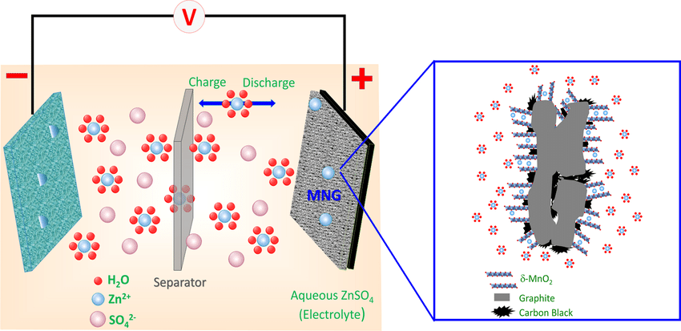
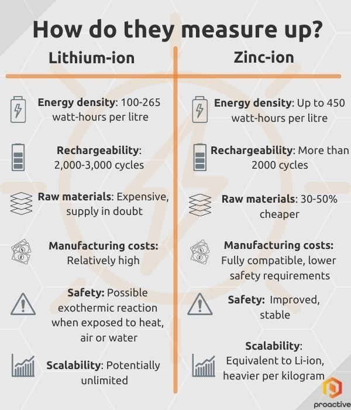
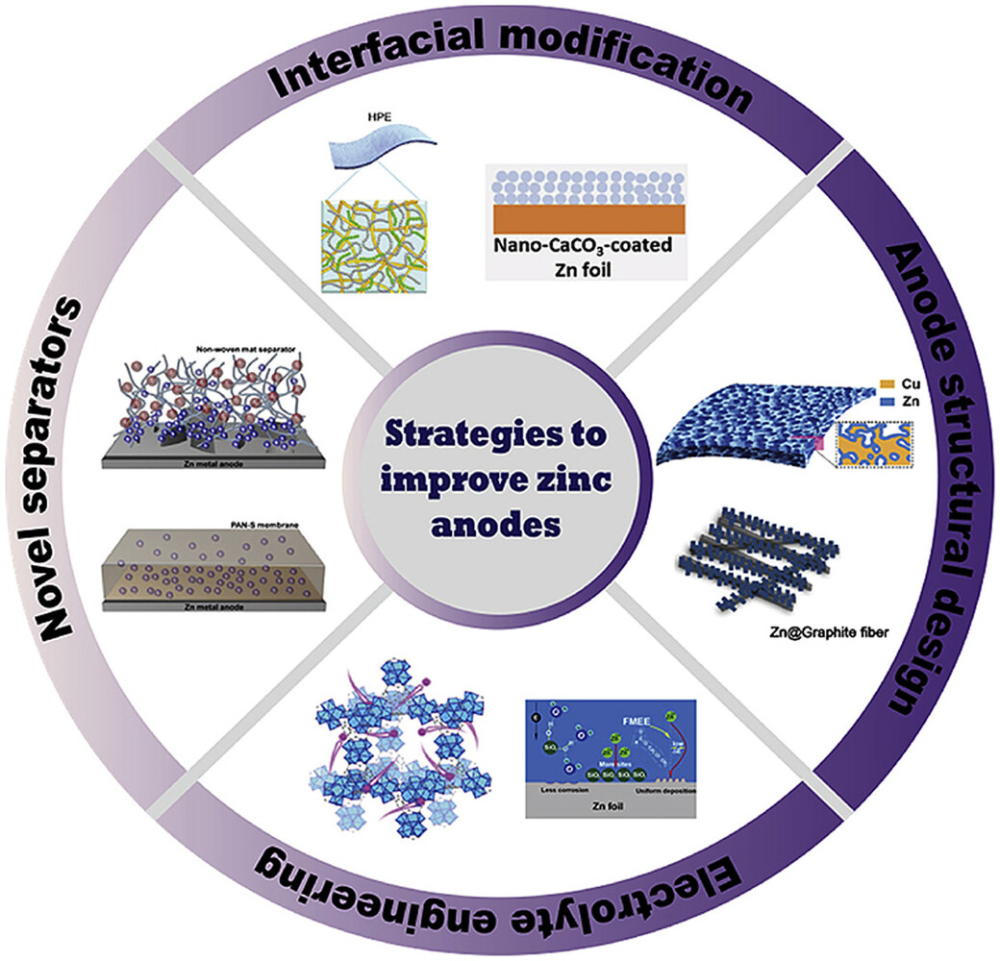
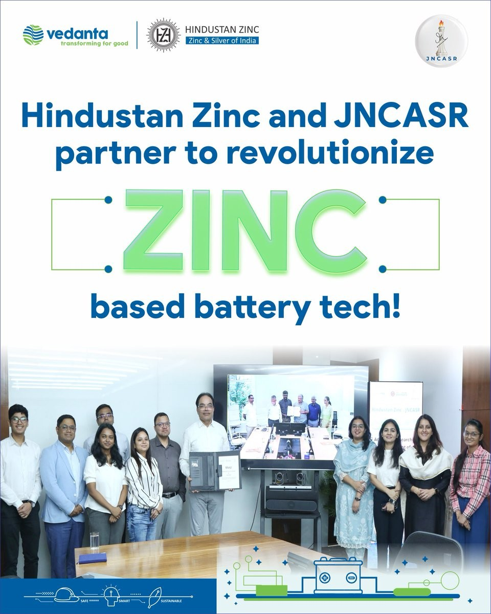
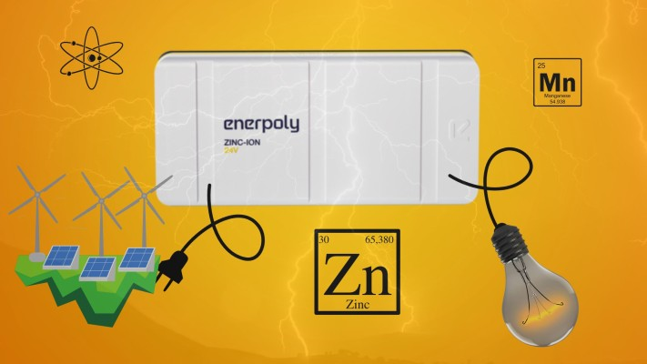
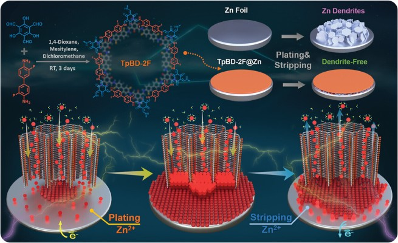

Introduction
Battery technology has evolved significantly, driven by the increasing demand for energy storage in electronics, electric vehicles, and renewable energy systems. While lithium-ion batteries dominate the market, alternative chemistries are being explored to overcome safety, cost, and sustainability challenges.
One promising contender is zinc-ion battery technology, which offers advantages such as safety, affordability, and environmental benefits. This article delves into the latest innovations in zinc-ion batteries, highlighting their potential and future applications.
Understanding Zinc-ion Batteries
What Are Zinc-ion Batteries?
Zinc-ion batteries operate similarly to lithium-ion batteries but use zinc ions as charge carriers. They typically consist of a zinc anode, a cathode made of materials like manganese oxide, and a water-based electrolyte.
How They Work: The Chemistry Behind Zinc-ion Batteries
During charging, zinc ions move from the cathode to the anode, depositing zinc metal. During discharge, the process reverses, generating electricity. Their aqueous electrolyte makes them inherently safer than lithium-ion batteries, reducing the risk of thermal runaway.
Key Components and Structure
- Anode: Metallic zinc, offering high capacity and stability
- Cathode: Typically manganese-based, though new materials are emerging
- Electrolyte: Aqueous solution, preventing combustion risks

Advantages of Zinc-ion Batteries
- Safety Benefits Compared to Lithium-ion Batteries
Zinc-ion batteries eliminate risks associated with lithium-ion batteries, such as overheating and explosion. Their non-flammable electrolyte enhances safety.
- Cost-Effectiveness and Material Availability
Zinc is abundant and inexpensive compared to lithium, cobalt, and nickel, making zinc-ion batteries a cost-effective alternative.
- Environmental Friendliness and Recyclability
Zinc-ion batteries use materials that are non-toxic and more easily recyclable, addressing concerns about e-waste and hazardous materials.
- Energy Density and Cycle Life Improvements
Recent advancements are improving zinc-ion batteries' cycle life and energy density, making them more competitive with lithium-ion options.

Recent Innovations in Zinc-ion Battery Technology
Advanced Electrolyte Development
Innovations in electrolyte composition have significantly improved the performance of zinc-ion batteries:
- Water-Based Electrolytes: Reduce fire risks and improve sustainability
- Dendrite Suppression Techniques: Extend battery lifespan by preventing zinc dendrite growth
Enhanced Cathode Materials
- Manganese-Based Cathodes: Deliver higher energy densities and improved stability
- Vanadium and Other Novel Materials: Enhance cycle life and efficiency
Anode Advancements
- High-Purity Zinc Anodes: Reduce side reactions, increasing longevity
- Coating Techniques: Improve conductivity and prevent degradation
Manufacturing and Scalability Improvements
- Innovative Assembly Techniques: Lower costs and improve battery consistency
- Mass Production Strategies: Aim to make zinc-ion batteries commercially viable

Recent Developments
JNCASR and Hindustan Zinc Partnership
- Objective: Develop new variants of zinc materials to enhance the performance and commercialization of zinc-ion batteries.
- Impact: This collaboration aims to leverage Jawaharlal Nehru Centre for Advanced Scientific Research (JNCASR) research expertise and Hindustan Zinc product innovation capabilities to create low-cost, grid-scale energy storage solutions.

IIT Madras and Hindustan Zinc Collaboration
- Objective: Develop a 1 kWh electrically rechargeable Zinc-Air battery prototype. Zinc-air batteries are gaining traction for long-duration energy storage. Partnerships like the one between Indian Institute of Technology, Madras and Hindustan Zinc are accelerating the development of advanced zinc-air battery technologies.
- Impact: This partnership seeks to create a cost-effective, durable alternative to lithium-ion batteries, supporting India's growing solar power sector.
Enerpoly’s Zinc-Ion Battery Technology
- Key Features: Affordable, rechargeable, and safe, using zinc metal as the anode and manganese dioxide as the cathode.
- Impact: Offers enhanced safety, recyclability, and affordability for large-scale stationary energy storage applications.

Extended Lifespan with Protective Layers
- Innovation: Researchers at the Technical University of Munich have developed a protective layer that extends zinc battery lifespan by hundreds of thousands of cycles.
- Impact: This breakthrough could make zinc-ion batteries a viable replacement for lithium-ion batteries in large-scale energy storage.

Future Directions
- Sustainability and Cost-Effectiveness: Zinc-ion batteries are poised to revolutionize energy storage due to their use of abundant, non-critical raw materials, making them a cost-effective and environmentally friendly option.
- Technological Advancements: Ongoing research focuses on optimizing electrode materials, electrolyte compositions, and battery architectures to improve performance and lifespan.
Conclusion
Zinc-ion batteries present a promising alternative to lithium-ion technology, offering safety, cost, and sustainability benefits. Innovations in materials, electrolytes, and manufacturing processes continue to improve their viability. As research progresses, zinc-ion batteries could play a significant role in energy storage solutions worldwide.